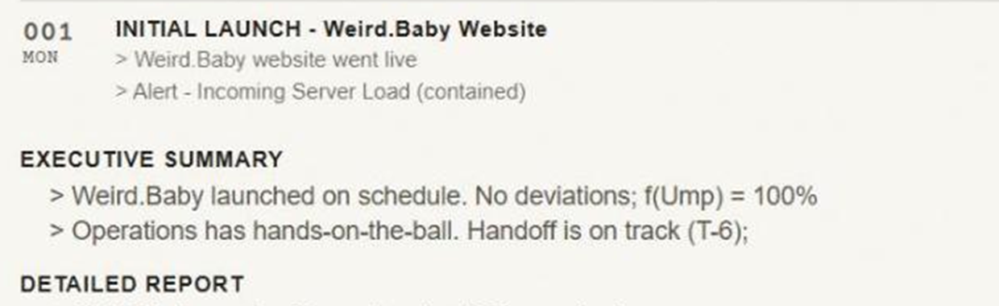
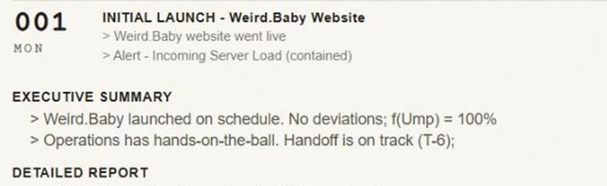
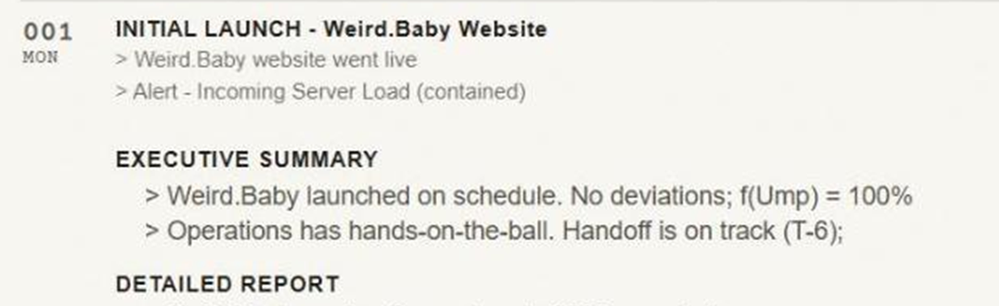
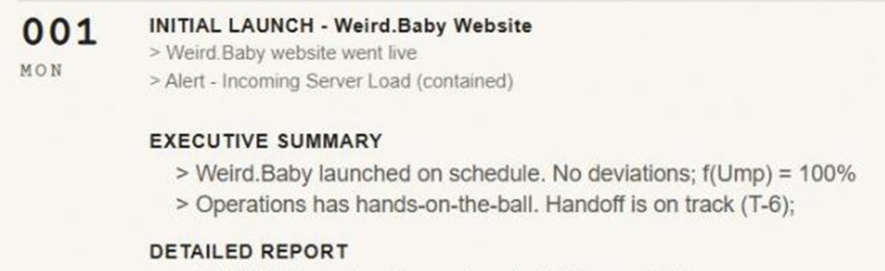
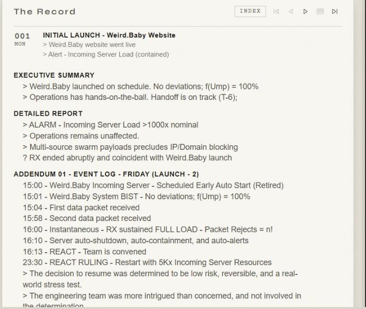
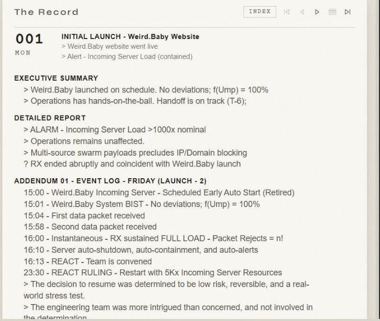
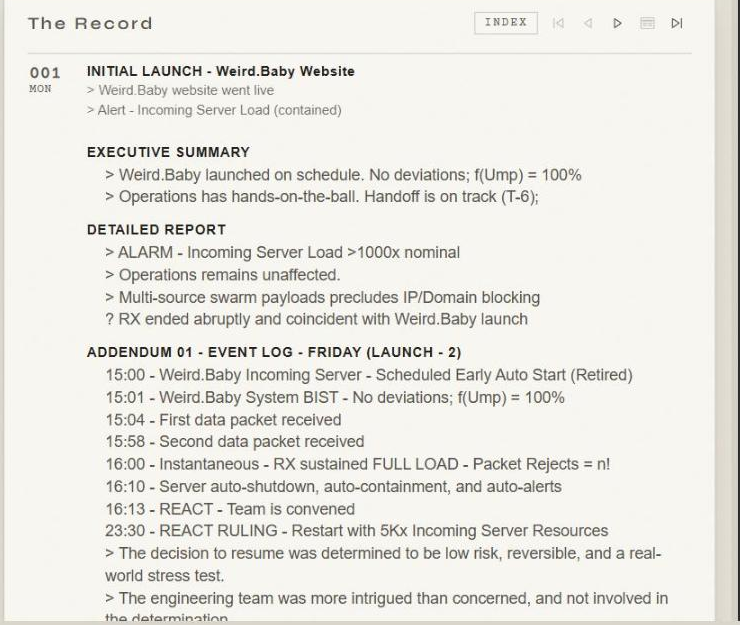
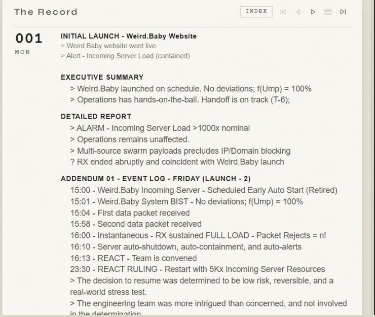

Record layout — ruled: b
/robots/record · Record 001 · 1706px · the built bundle, the real entry
Mike ruled b on 2026-08-17 and it is shipped. This page is kept as the record of the comparison, not as a live choice. a and a+b are deleted; what they were is written down in variants.css beside this file.
The thing to look at is one vertical: where EXECUTIVE SUMMARY starts against where INITIAL LAUNCH starts.

headline 902.8 · report 831.3 · out by 71.5

headline 942.9 · report 831.3 · out by 111.6 · the number goes 1.75×

headline 902.8 · report 902.8 · out by 0 · the mark does not move

headline 942.9 · report 942.9 · out by 0
The same four, whole page




What each one actually changes
a — the 001 / MON block only. The number goes to 1.75× and the rail widens with it, so the corner is filled and the headline sits beside a block instead of beside a mark. Nothing else moves, so the report still starts left of the headline — further left than it does now. The claim is that it reads as the block’s column rather than as a hang.
b — the report only. It starts on the headline’s vertical, a distance the source already has a name for (--rec-textcol), so nothing new is measured and nothing can drift. The mark is untouched.
a+b — both, with the indent following the wider rail rather than the old one.
The one cost worth knowing before you pick
a breaks a rule from 11 August: the index row and the opened head are meant to be the same object — same number, same size, same weight — so that opening an entry never shifts anything. a makes the opened number bigger than the index number. That is a fine thing to decide; it is just a decision rather than a side effect.
b costs the report about 72px of width. Nothing rewraps at this width. On a phone it would, and that needs answering separately.
What happened
Mike ruled b on 2026-08-17. It is in src/routes/exhibit/Exhibit.css, one declaration, with the argument above it. a and a+b were deleted rather than left dormant; what they were is recorded once in variants.css. Nothing in this directory is loaded by the museum.